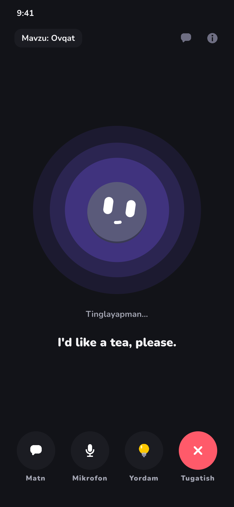
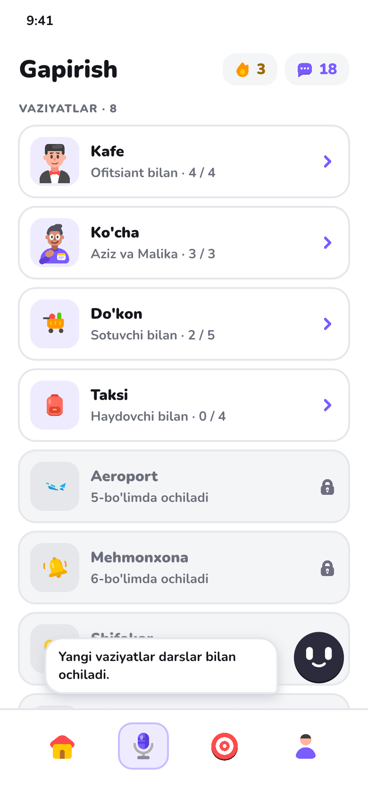
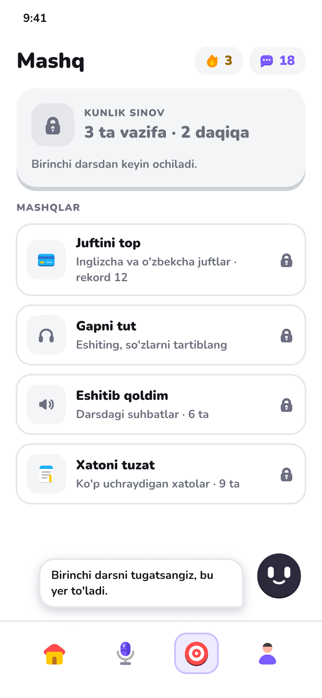
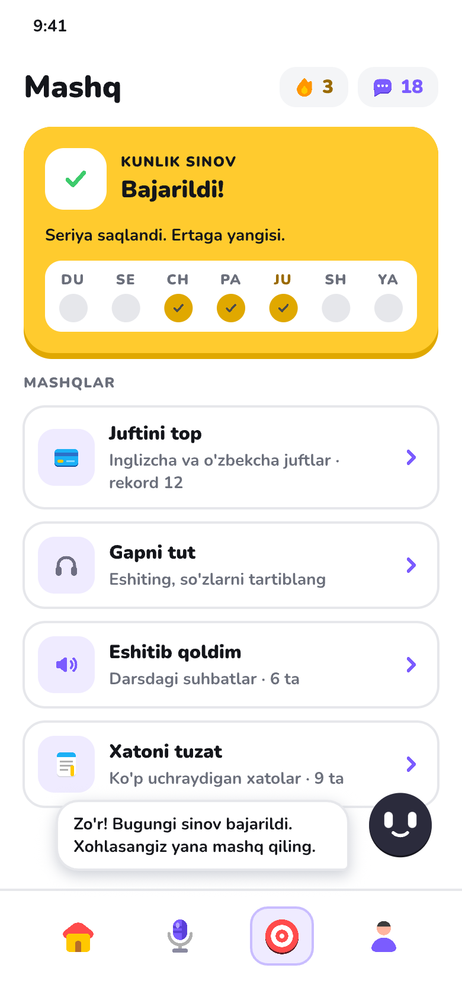
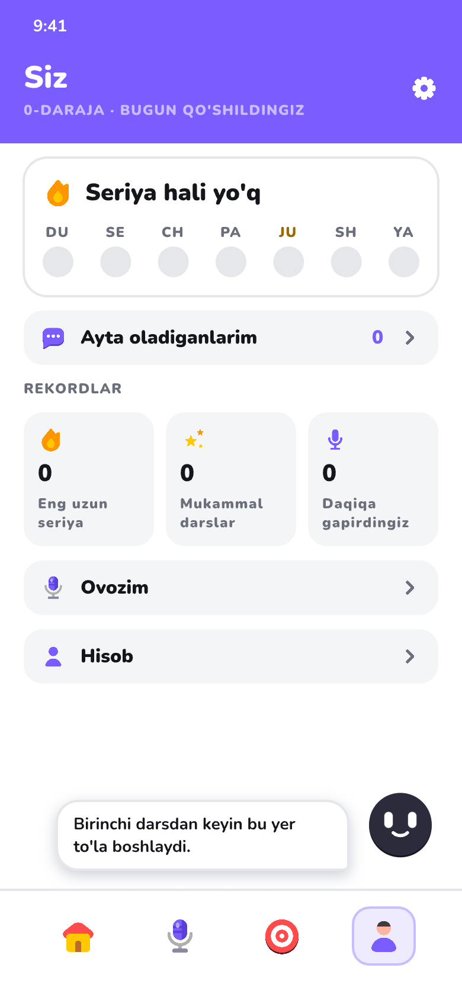

Pick one version of each tab
Three versions of Learn, Speak, Practice and Me, drawn in Pencil with the shared design system and your own icon set. Dombi now floats over each screen (bottom right) with his line in a bubble; on Speak he sits in the middle because you talk to him. Pick one version per tab, or mix them ("B, with A's top card"). At the end, check the Uzbek lines.
O'rganish (Learn)
Gapirish (Speak)
Live voice conversation with Dombi, like ChatGPT's voice mode, plus role-play situations and sound practice.



Mashq (Practice)


Men (Me)

New Uzbek lines
Every new interface line in these designs. Mark any that sound wrong or unnatural, and write the better version.
- O'rganish
- 2-BO'LIM · KAFEDA · 2-DARS
- Taom buyurtma qila olasiz
- 4 daqiqa. Bugun shu dars bilan seriya 4 kun bo'ladi.
- BOSHLASH
- Keyingi dars shu yerda. 4 daqiqa.
- KEYINGI DARS
- Kafeda yana 3 dars qoldi. Boshlaymizmi?
- DAVOM ETISH
- Gapirish
- Dombi bilan gaplashing
- Istalgan mavzuda, ovoz bilan. Xato qilsangiz ham bemalol.
- Bugungi kun · Ovqat · Sayohat · Ish
- VAZIYATLAR
- Ofitsiant bilan · 2 / 4
- Aziz va Malika · 1 / 3
- Qaysi birini eshitdingiz?
- Mavzu tanlang yoki shunchaki gapiring.
- Vaziyat · Tovush
- Qanday gaplashamiz? Bittasini tanlang.
- Erkin suhbat
- Istalgan mavzuda Dombi bilan
- Yordam bilan
- Boshlash uchun tayyor gaplar va maslahat
- Kafe, ko'cha, do'kon: rolni o'ynang
- Inglizcha hali gapirmaganmisiz?
- Hechqisi yo'q. Men savol beraman, siz tayyor gaplardan birini aytasiz.
- YORDAM BILAN BOSHLASH
- 1-darsdan keyin ochiladi · 2-bo'limda ochiladi
- Yangi vaziyatlar darslar bilan ochiladi.
- Taksi · Aeroport · Mehmonxona · Shifokor · Ish suhbati
- Haydovchi bilan · Sotuvchi bilan
- Mavzu: Ovqat
- Tinglayapman…
- Matn · Mikrofon · Yordam · Tugatish
- Mashq
- Bugun 2 daqiqa topsangiz bo'ldi.
- KUNLIK SINOV
- 3 ta vazifa · 2 daqiqa
- Bajarsangiz, seriya saqlanadi.
- MASHQLAR
- Juftini top
- Inglizcha va o'zbekcha juftlar · rekord 12
- Gapni tut
- Eshiting, so'zlarni tartiblang
- Eshitib qoldim
- Darsdagi suhbatlar · 6 ta
- Xatoni tuzat
- Ko'p uchraydigan xatolar · 9 ta
- Tinglash · So'zlar
- Qaysi biri qiyin bo'lsa, o'shani mashq qiling.
- Birinchi darsni tugatsangiz, bu yer to'ladi.
- Birinchi darsdan keyin ochiladi.
- Zo'r! Bugungi sinov bajarildi. Xohlasangiz yana mashq qiling.
- Bajarildi!
- Seriya saqlandi. Ertaga yangisi.
- Men
- 0-DARAJA · OKTYABRDAN BERI
- 3 kun ketma-ket
- Ayta oladiganlarim
- REKORDLAR
- Eng uzun seriya · Mukammal darslar · Daqiqa gapirdingiz
- Ovozim · Hisob
- ta gapni inglizcha ayta olasiz
- Natijalar · Profil
- 0-DARAJA · BUGUN QO'SHILDINGIZ
- Birinchi darsdan keyin bu yer to'la boshlaydi.
- Zo'r! 3 kun ketma-ket. Ertaga ham kelasizmi?
- Seriya hali yo'q
- Salom! Bugun bitta suhbat yetarli.